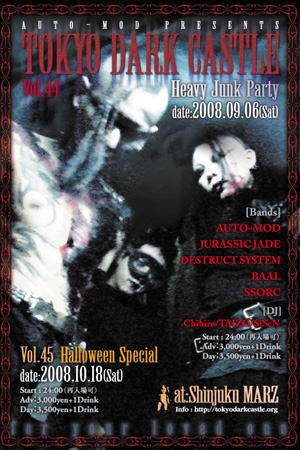

●９月6日（土） 新宿MARZ
TOKYO DARKCASTLE Vol.44
With: AUTO-MOD
DESTRUCT SYSTEM
BAAL
SSORC
[ DJs ]
Chihiro
TAIZO
SiSeN

●ＪＵＲＡＳＳＩＣ ＪＡＤＥ’Ｓ setlists
1. ドク・ユメ・スペルマ
2. 触れてはいけない
3. Smell Of The Pebble
4. Let's Go Heroes
5. Endoplasm
6. Mimic Cry
7. 3times Per 49days
8. The Individual D-Day～精神病質（Seishin-Byo-Shitsu）～Go To The Dogs
9. Hemiplegia
●ＭＥＭＢＥＲ’Ｓ comment
ＨＩＺＵＭＩ
ＮＯＢ
GEORGE
ＨＡＹＡ
●ＡＬＢＵＭ
| (C)小川聖人氏撮影 |
●BBS comment
DARK CASTLE 投稿者：mibo 投稿日：2008年 9月 7日(日)18時03分58秒
昨日(？)はお疲れ様でした。
いつもとは時間も雰囲気も違い、最初は戸惑いましたが、経験してみると、
割と気負いもせずに、イヴェント自体、とても楽しめました。
新譜のノリが大好きですが、全体の流れに馴染んでいる感じで、ライブもとても楽しくて。
フライヤーの中に、とても気になるライブが、あったのですが・・・
次回はいつだろうと思いながらも、楽しみにしています。
新宿ライブ 投稿者：さる 投稿日：2008年 9月 7日(日)19時58分16秒
お疲れ様でした。ひさびさのオールナイトイベントで、調子に乗りすぎて飲みすぎました(苦笑)。そのぶん、朝までイベント通して楽しませてもらえました。
何曲演ったのかも覚えていないテイタラク状態ですが、我が身にしっくりくる楽しさを感じられた事だけは覚えています。首の痛みと二日酔いがその証拠です。加えて自分、新譜の「3times per 49days」が大好きなんだなぁ、と再確認。そらみたことか。新譜の曲が自分のお気に入りをいつも更新してくるってのは、冥利につきます。だからこそ新しい進化を求め続けるわけで、留まらないJJにはいつも脱帽です。
それから、また過去撮影写真のRを持参し忘れました。そらみたことか。ホント申し訳ございません。その代わりに(嘘)、当日の写真をアップしてみました。
次回参戦、たぶん池袋になるかと思いますが、是非その前にも東京近辺にてお願いします。
http://home.g03.itscom.net/boana/
こんにちは 投稿者：はんもひ 投稿日：2008年 9月 9日(火)00時09分37秒
２０年前位によくライブに通わせてもらってました。ＷＥＢで見つけて先日の新宿のライブに行ってみました。昔の曲で体が動きましたよ。メドレーでなくて全部聴いてみたいです。
ＣＤが売ってたので買ってみました。いっぱいあってドレにするか悩んだのですが、結局昔レコードで持ってた初期の音源が集めてあるのにしちゃいました。
また行かせてもらいますね。
BACK TO